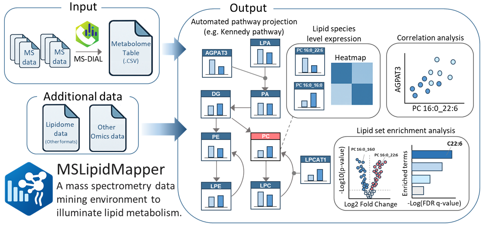
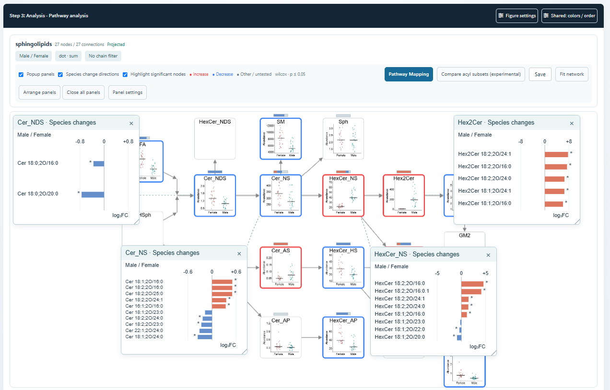
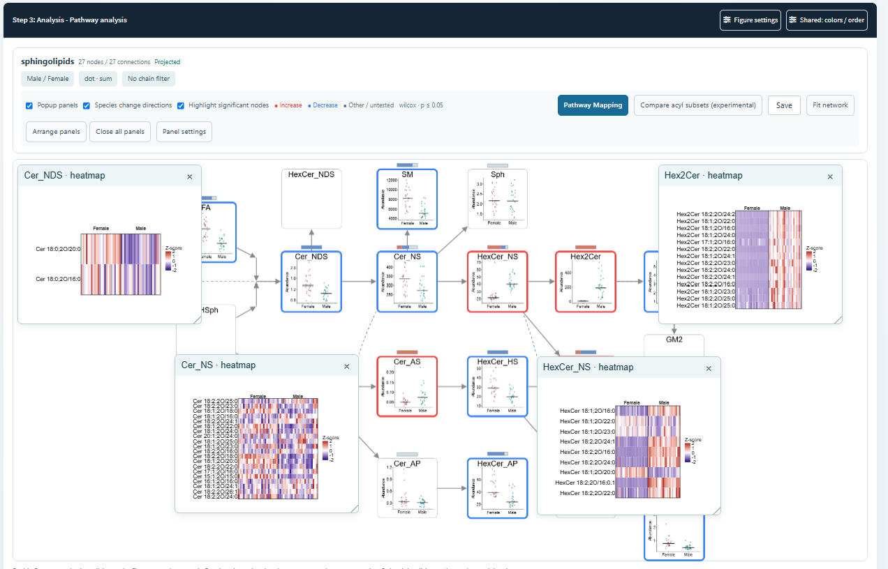

MSLipidMapper Tutorial
Import quantitative lipidomics data, explore differences between samples, and view your results on lipid metabolism pathway maps.
What MSLipidMapper does
MSLipidMapper is a Shiny application for quantitative lipidomics. It imports aligned abundance tables from MS-DIAL and generic CSV files for normalization, exploratory analysis, and pathway visualization.






Tutorial workflow
- Installation and setupLaunch the application with R or Docker.
- Import dataImport the example MS-DIAL abundance table.
- NormalizationNormalize abundances and review sample distributions.
- AnalysisExplore sample groups and lipid abundances.
- Pathway maps and exportView changes in lipid classes on a pathway map.